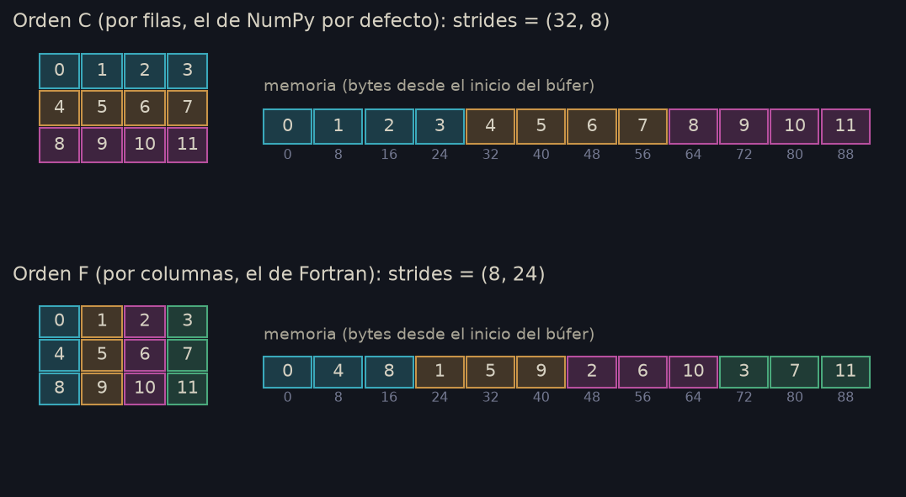

Objetivos. Al terminar serás capaz de:
- Predecir la forma (
shape) y el tipo (dtype) de una operación antes de ejecutarla, incluidas las reglas de promoción de NumPy 2. - Explicar un
ndarraycomo «búfer +dtype+ forma + pasos» y calcular los pasos (strides) de un arreglo y de sus rebanadas. - Distinguir vistas de copias y comprobarlo con
np.shares_memory. - Usar el indexado básico, el avanzado y el booleano, y predecir la forma que devuelve cada uno.
- Reorganizar arreglos con
reshape,transpose,stack,concatenateyNonesin perder la pista de los ejes.
Prerrequisitos. Python (listas y rebanadas lista[a:b:c]), producto de matrices y el entorno de la conferencia 1. En el diagnóstico no resolviste los ejercicios de NumPy: esta conferencia va rápido por lo básico y se detiene en lo que suele fallar. Si resuelves sin ayuda los ejercicios 1, 3 y 4 de la prueba de entrada, salta a la práctica 2.
§ 1Un comportamiento que no encaja con las listas
Empieza con el ejercicio 4 de la prueba de entrada. Con listas de Python, lista[::2] es una lista nueva: modificarla no toca la original. ¿Ocurre lo mismo en NumPy?
¿Qué imprime este programa?
import numpy as np
a = np.arange(6) # [0 1 2 3 4 5]
b = a[::2]
b[0] = 100
c = a[[1, 3, 5]]
c[0] = -1
print(a)Comprométete con una opción y después mira la explicación
b sí modificó a, y c no. La rebanada a[::2] no copia nada: es otra forma de leer los mismos bytes. El indexado con una lista a[[1, 3, 5]] sí copia. Para entender por qué hay que mirar qué es un ndarray por dentro. Ese modelo es también lo que explica por qué NumPy es rápido, por qué a veces gasta memoria sin avisar y cómo funcionan los tensores de PyTorch, que son la misma idea.
§ 2Anatomía de un ndarray
Definición 1 (arreglo de NumPy). Un ndarray consta de
- un búfer: un bloque contiguo de bytes en memoria;
- un
dtype: cómo interpretar cada grupo de bytes (int64= entero de 8 bytes con signo;float32= real de 4 bytes); - una forma (
shape): el tamaño de cada eje;ndim = len(shape); - unos pasos (
strides): cuántos bytes hay que avanzar en el búfer para moverse una posición en cada eje; - un desplazamiento inicial dentro del búfer.
El elemento de índices está en la dirección
Esa fórmula es todo el secreto. Un arreglo de NumPy no es una lista de listas: es una forma de leer un búfer plano.
x = np.arange(12).reshape(3, 4)
x.shape, x.ndim, x.size # (3, 4), 2, 12
x.dtype, x.itemsize, x.nbytes # int64, 8, 96
x.strides # (32, 8)¿Por qué (32, 8)? Moverse una columna es avanzar un elemento, 8 bytes. Moverse una fila es saltar 4 elementos, bytes. Es el orden C (por filas), el de NumPy por defecto. Existe también el orden F (por columnas, el de Fortran y MATLAB), con pasos (8, 24): la figura los compara.

RespuestaAntes de seguir: un arreglo float32 de forma (10, 28, 28) en orden C, ¿qué strides tiene y cuántos bytes ocupa?
Cada elemento ocupa 4 bytes. El último eje avanza 4 bytes; el del medio salta 28 elementos, ; el primero salta elementos, bytes. strides = (3136, 112, 4). Ocupa bytes, unos 31 KB. Es un lote de 10 imágenes de MNIST.
Por qué esto hace rápido a NumPy
Una lista de Python con un millón de enteros es un millón de punteros a objetos int dispersos por la memoria, cada uno con su cabecera (28 bytes por entero pequeño más 8 del puntero). Sumarla con un for obliga al intérprete, en cada vuelta, a seguir el puntero, comprobar el tipo, buscar el método de suma y crear un objeto nuevo.
Un ndarray de int64 son 8 millones de bytes contiguos del mismo tipo. x.sum() llama a un bucle escrito en C que recorre el búfer sin comprobar tipos y que el compilador vectoriza con instrucciones SIMD. En la conferencia 3 lo medirás: de 50 a 500 veces más rápido. La regla de estilo que se deduce: en NumPy, un bucle de Python sobre los elementos es casi siempre un error. La pregunta nunca es «¿cómo recorro el arreglo?», sino «¿qué operación sobre arreglos enteros hace esto?».
§ 3Crear arreglos
| Orden | Resultado | dtype |
|---|---|---|
np.array([1, 2, 3]) |
desde una lista | int64 |
np.array([1, 2.5]) |
mezcla entero y real | float64 |
np.zeros((2, 3)), np.ones(3), np.full((2, 2), 7) |
rellenos | float64, float64, int64 |
np.empty(5) |
sin inicializar (basura) | float64 |
np.arange(0, 1, 0.25) |
[0, 0.25, 0.5, 0.75]: el final no se incluye |
float64 |
np.linspace(0, 1, 5) |
[0, 0.25, 0.5, 0.75, 1]: el final sí se incluye |
float64 |
np.eye(3) |
identidad | float64 |
np.zeros_like(x) |
como x, con ceros |
el de x |
Observación 1. Con pasos reales usa linspace, no arange. np.arange(0, 1, 0.1) puede dar 10 u 11 elementos según cómo redondee el último paso; np.linspace(0, 1, 11) da 11 siempre.
§ 4El dtype y las reglas de promoción
Los tipos que usarás
- Enteros:
int8…int64yuint8(sin signo, 0-255: las imágenes). - Reales:
float16,float32,float64. NumPy usafloat64por defecto; PyTorch,float32, y en GPU se entrena enfloat16obfloat16. Importará al pasar arreglos de NumPy a PyTorch. - Booleanos: al sumarlos,
Truevale 1:np.array([True, True, False]).sum()es2, y.mean()es la fracción de verdaderos. - Texto:
<U21. Para texto, pandas o listas, no NumPy.
¿Qué dtype sale de una operación?
Regla de promoción (NumPy ≥ 2, propuesta NEP 50).
- Entre arreglos (o escalares de NumPy, como
np.float64(1.5)), el resultado es el tipo más pequeño que representa a ambos:int8 + int16 → int16,float32 + float64 → float64. - Con un número de Python (
1,1.5), el número es «débil»: se adapta al tipo del arreglo si es de la misma clase.float32 + 1.5 → float32;int8 + 1 → int8. - Si el número de Python es de una clase superior (un real con un arreglo de enteros), sube la clase:
int64 + 0.5 → float64. /siempre da real:np.arange(3) / 2esfloat64. La división entera es//.
Todos estos ejemplos se comprobaron con NumPy 2.5:
a8 = np.array([100, 120], dtype=np.int8)
(a8 + 1).dtype # int8 (regla 2)
a8 + a8 # array([-56, -16], dtype=int8) ¡desbordamiento silencioso!
(np.ones(2, np.float32) + 1.5).dtype # float32 (regla 2)
(np.ones(2, np.float32) + np.ones(2)).dtype # float64 (regla 1)
(np.arange(3) + 0.5).dtype # float64 (regla 3)
np.array([255], np.uint8) + 1 # array([0], dtype=uint8) ¡da la vuelta!Dos detalles más que causan errores silenciosos:
astypea entero trunca hacia cero, no redondea:np.array([1.7, -1.7]).astype(int)da[1, -1].np.roundredondea los empates al par:np.round([1.5, 2.5, 3.5])da[2., 2., 4.].
Ejemplo 1 (predecir el dtype). x = np.arange(5, dtype=np.int32).
x * 2→int32: el 2 es de Python y entero, se adapta (regla 2).x * np.int64(2)→int64: escalar de NumPy con tipo propio (regla 1).x / 2→float64:/siempre da real (regla 4).x.mean()→float64: las medias se calculan en real.x > 2→bool.
Coma flotante: lo mínimo
0.1 + 0.2 == 0.3esFalse: 0,1 no tiene representación binaria exacta. Compara reales con tolerancia:np.isclose(a, b)elemento a elemento ynp.allclose(a, b)para todo el arreglo.float32tiene unos 7 dígitos significativos ();float64, unos 16 (). Enfloat32, .NaNno es igual a nada, ni a sí mismo: usanp.isnan. Además se propaga:np.array([1, np.nan, 3]).mean()esnan;np.nanmeanlo ignora.
RespuestaAntes de seguir: img es una imagen uint8 de forma (480, 640, 3). ¿Qué tipo dan img / 255 e img // 255? ¿Cuál quieres?
img / 255 da float64 con valores en : lo que quieres (mejor img.astype(np.float32) / 255, que gasta la mitad y es lo que espera PyTorch). img // 255 es división entera en uint8: 0 salvo donde el píxel valía 255. Una imagen casi negra.
§ 5Indexado básico: rebanadas que son vistas
Con un entero por eje se selecciona un elemento; con rebanadas inicio:fin:paso, un rango (el fin no se incluye; los negativos cuentan desde el final):
x = np.arange(12).reshape(3, 4)
# [[ 0 1 2 3]
# [ 4 5 6 7]
# [ 8 9 10 11]]
x[1, 2] # 6
x[1] # [4 5 6 7] forma (4,) — un entero «se come» su eje
x[:, 2] # [ 2 6 10] forma (3,)
x[:, 2:3] # [[2] [6] [10]] forma (3, 1) — una rebanada conserva el eje
x[0:2, 1:3] # [[1 2] [5 6]] forma (2, 2)
x[::2, ::-1] # [[ 3 2 1 0] [11 10 9 8]]Regla de las formas (indexado básico). Cada entero elimina su eje; cada rebanada lo conserva con la longitud del rango. x[:, 2] tiene forma (3,) y x[:, 2:3], (3, 1). Es la fuente número uno de errores de forma: elige a propósito.
Definición 2 (vista y copia). Una vista es un ndarray nuevo (otra forma, otros pasos, otro desplazamiento) que apunta al mismo búfer que el original. Una copia tiene su propio búfer.
Proposición 1. El indexado básico (enteros y rebanadas) siempre devuelve una vista.
Demostración. Una rebanada inicio:fin:paso sobre un eje de paso se describe con el mismo búfer: desplazamiento nuevo desplazamiento , y paso nuevo . Un índice entero suma al desplazamiento y elimina el eje. Como el resultado se escribe con la fórmula de la dirección sobre el mismo búfer, no hace falta copiar.
Ahí está la respuesta al problema de la sección 1. b = a[::2] es una vista con paso bytes; escribir b[0] = 100 escribe en el byte 0 del búfer, que es a[0]. El motor siguiente lo hace visible para cualquier rebanada: cambia el inicio y el paso y mira qué celdas del búfer lee la vista; después cambia a una lista o una máscara y compara.
Esta visualización necesita JavaScript.
¿Por qué NumPy elige esto? Por eficiencia: con una imagen de 4000 × 3000 píxeles, img[100:500, 200:800] es instantáneo y no gasta memoria. El precio: si quieres conservar el original, copia explícitamente: recorte = img[100:500, 200:800].copy().
Observación 2 (una trampa de memoria). Una vista mantiene vivo todo el búfer original. Si cargas 2 GB, te quedas con pequeño = grande[:10] y borras grande, los 2 GB siguen ocupados porque pequeño los referencia. Con .copy() se liberan.
RespuestaAntes de seguir: con x = np.arange(12).reshape(3, 4), ¿cuáles comparten memoria con x: x[1], x[:, ::2], x[1:2, :], x + 0?
Las tres primeras son indexado básico: vistas. x + 0 es aritmética: un arreglo nuevo. Compruébalo con np.shares_memory(x, …).
§ 6Indexado avanzado: listas y arreglos de enteros
Cuando el índice es una lista o un arreglo de enteros, NumPy no puede describir el resultado con un desplazamiento y un paso (los índices pueden repetirse o ir en cualquier orden), así que copia:
x[[0, 2]] # filas 0 y 2 forma (2, 4)
x[:, [3, 0]] # columnas 3 y 0, en ese orden forma (3, 2)
x[[0, 2], [1, 3]] # ¡pares! (0,1) y (2,3): [ 1 11] forma (2,)
x[np.ix_([0, 2], [1, 3])] # la submatriz {0,2}×{1,3}: [[1 3] [9 11]]Tres usos del indexado avanzado que reaparecen en todo el curso:
# 1. Tabla de búsqueda (embeddings): la fila de cada token
emb = np.random.default_rng(0).normal(size=(1000, 64)) # 1000 palabras, vectores de 64
tokens = np.array([[3, 17, 5], [8, 8, 2]]) # 2 frases de 3 tokens
emb[tokens].shape # (2, 3, 64)
# 2. Codificación one-hot: fila y_i de la identidad
y = np.array([2, 0, 1, 2])
np.eye(3)[y] # [[0 0 1] [1 0 0] [0 1 0] [0 0 1]]
# 3. La probabilidad de la clase correcta en cada fila
P = np.array([[0.1, 0.7, 0.2],
[0.5, 0.3, 0.2]])
y = np.array([1, 0])
P[np.arange(2), y] # [0.7 0.5] — pares (0, 1) y (1, 0)El tercero es la pérdida de cualquier clasificador: es -np.log(P[np.arange(n), y]).mean().
Asignar sí escribe en el original (a[[0, 2]] = -1), pero cuidado con los índices repetidos al acumular:
a = np.arange(6)
a[[0, 0, 0]] += 1 # a[0] vale 1, no 3: se lee una vez y se escribe tres veces lo mismo
np.add.at(a, [0, 0, 0], 1) # aquí sí acumula: a[0] pasa de 1 a 4np.add.at y np.bincount son la forma correcta de acumular (histogramas, gradientes de tokens repetidos).
RespuestaAntes de seguir: x tiene forma (5, 4). ¿Qué forma tienen x[[1, 3]], x[[1, 3], :2], x[[1, 3], [0, 2]] y x[[[1], [3]], [0, 2]]?
(2, 4); (2, 2); (2,) (pares); y (2, 2): el primer índice tiene forma (2, 1) y el segundo (2,), que se combinan por broadcasting (conferencia 3) en (2, 2). Es lo mismo que np.ix_([1, 3], [0, 2]).
§ 7Indexado booleano: máscaras
Una máscara es un arreglo booleano de la misma forma que el dato (o que uno de sus ejes). Selecciona donde vale True, y el resultado es siempre una copia (aplanada si la máscara cubre todos los ejes):
x[x > 6] # [ 7 8 9 10 11] forma (5,)
(x > 6).sum() # 5: cuántos cumplen
(x > 6).mean() # 0.4166…: qué fracción
x[(x > 2) & (x < 6)] # [3 4 5] — paréntesis obligatorios
filtro = x[:, 0] > 3 # máscara sobre el eje 0: [False True True]
x[filtro] # filas 1 y 2, forma (2, 4)Modificar con máscaras
a = np.arange(6)
a[a > 2] = 0 # asignación con índice: escribe en a → [0 1 2 0 0 0]
m = a[a > 2]; m[:] = 0 # NO toca a: m es una copia
np.where(x > 6, x, -1) # elige elemento a elemento
np.clip(z, 0, 1) # recorta a un rango sin máscarasLa primera línea y la segunda se parecen, pero a[mascara] = valor llama a a.__setitem__, que escribe en a; m = a[mascara] crea una copia, y lo que hagas con m no vuelve.
Ejemplo 2 (limpieza con máscaras). Un sensor escribe -999 cuando falla. Quieres cuántas lecturas fallaron, la media de las válidas y sustituir los fallos por NaN.
t = np.array([21.5, -999, 23.0, 22.4, -999, 24.1])
fallo = t == -999 # [F T F F T F]
fallo.sum() # 2
t[~fallo].mean() # 22.75
t[fallo] = np.nan # escribe en t (t ya es float64; con enteros daría ValueError)
np.nanmean(t) # 22.75Por qué así. La máscara se calcula una vez y se reutiliza; ~ la invierte; NaN es un real, así que hay que comprobar el dtype antes de asignarlo.
¿Por qué el indexado con máscara no puede devolver una vista, y en cambio a[mascara] = 0 sí modifica a? ---
Una vista necesita describir sus elementos con un desplazamiento y un paso fijo por eje. Los True de una máscara están donde caigan, sin ningún patrón regular, así que no hay paso que los describa: hay que copiarlos. La asignación es otra operación: a[mascara] = 0 no crea ningún arreglo intermedio que se pierda, sino que llama a a.__setitem__(mascara, 0), que escribe directamente en el búfer de a en las posiciones marcadas.
Compara con una respuesta modelo
§ 8Cambiar la forma: reshape, transpose y compañía
reshape reinterpreta el mismo número de elementos con otra forma, recorriéndolos en orden C. Un -1 significa «lo que haga falta».
x.reshape(4, 3) # vista
x.reshape(2, -1) # forma (2, 6)
x.reshape(-1) # (12,): aplanar
x.reshape(5, -1) # ValueError: 12 no es divisible entre 5
x.ravel() # aplana: vista si puede, copia si no
x.flatten() # aplana: SIEMPRE copiaProposición 2 (cuándo aplanar es una vista). Reorganizar un arreglo contiguo en orden C siempre da una vista; aplanar uno que no lo es (como una traspuesta) puede obligar a copiar.
Idea. Si el arreglo es contiguo, los elementos ya están en el búfer en el orden en que reshape los recorre. x.T (pasos (8, 32)) recorrido en orden C salta por el búfer así: , que no es una progresión aritmética; ningún paso único la describe. La demostración para valientes 3 da el criterio exacto y lo demuestra.
Las traspuestas y permutaciones de ejes son vistas: solo reordenan los pasos.
img = np.zeros((32, 32, 3)) # alto, ancho, canales (como se leen las imágenes)
img.transpose(2, 0, 1).shape # (3, 32, 32): canales primero, como lo quiere PyTorch
np.moveaxis(img, -1, 0).shape # lo mismo
v = np.arange(3)
v[:, None].shape # (3, 1) columna
v[None, :].shape # (1, 3) fila
np.squeeze(np.zeros((1, 3, 1))).shape # (3,)| Orden | Qué hace | con v de forma (3,) |
|---|---|---|
np.concatenate([a, b], axis=k) |
pega a lo largo de un eje existente | (6,) |
np.stack([a, b], axis=k) |
crea un eje nuevo y apila | (2, 3); con axis=1, (3, 2) |
np.column_stack([a, b]) |
atajo | (3, 2) |
Ejemplo 3 (lote de imágenes). Tienes 10 imágenes (32, 32, 3) en una lista y quieres (a) un arreglo (lote, canales, alto, ancho), (b) cada imagen como vector, (c) el color medio de cada imagen.
L = np.stack(imagenes)→(10, 32, 32, 3):stackporque queremos un eje nuevo, el del lote.- (a)
L.transpose(0, 3, 1, 2)→(10, 3, 32, 32). - (b)
L.reshape(10, -1)→(10, 3072)(); comoLes contiguo, es una vista. - (c)
L.mean(axis=(1, 2))→(10, 3): desaparecen alto y ancho.
En los tres casos la forma se predice antes de ejecutar. Escríbela en un comentario y compruébala con assert.
§ 9Operaciones elemento a elemento y producto matricial
Las aritméticas, las comparaciones y las funciones universales (np.exp, np.log, np.maximum…) actúan elemento a elemento. * no es el producto matricial; ese es @:
A = np.array([[1, 2], [3, 4]])
A * A # [[ 1 4] [ 9 16]] elemento a elemento
A @ A # [[ 7 10] [15 22]] producto matricial
(np.ones((5, 2, 3)) @ np.ones((3, 4))).shape # (5, 2, 4): los primeros ejes son «lote»Las operaciones in situ (x += 1) escriben en el búfer existente sin crear otro, pero respetan su dtype: x = np.arange(3); x += 0.5 lanza UFuncTypeError.
§ 10Práctica de recuperación: predice formas
Cada pregunta es nueva. Responde sin ejecutar nada; diez seguidas sin fallo indican que el modelo mental está fijado.
Esta visualización necesita JavaScript.
(3, 4).§ 11Errores típicos
| Error | Síntoma | Detección y arreglo |
|---|---|---|
| Modificar una vista creyendo que es una copia | cambia el original «sin motivo» | np.shares_memory(a, b); .copy() |
| Modificar una copia creyendo que es una vista | m = a[mascara]; m[:] = 0 no tiene efecto |
a[mascara] = 0 |
x[:, 2] cuando querías x[:, 2:3] |
(n,) en vez de (n, 1); broadcasting raro después |
assert col.shape == (n, 1) |
| Desbordamiento de enteros | negativos o valores absurdos | convierte a float32 o int64 antes |
and, or con arreglos |
ValueError: truth value… ambiguous |
&, |, ~ y paréntesis |
a[[i, i]] += 1 para acumular |
cuenta una vez | np.add.at, np.bincount |
Comparar reales con == |
False inesperados |
np.isclose, np.allclose |
* en vez de @ |
resultado erróneo o error de forma | piensa en la forma esperada antes |
Una costumbre que evita la mitad de estos errores: escribe la forma esperada de cada arreglo en un comentario (# (n, d)) y comprueba las importantes con assert x.shape == (n, d).
Ideas que te llevas
- Un
ndarrayes búfer +dtype+ forma + pasos. Casi todo lo raro de NumPy se explica con la fórmula de la dirección. - Indexado básico → vista. Indexado avanzado y máscaras → copia. Asignar con cualquiera de ellos escribe en el original.
- Un entero elimina su eje; una rebanada lo conserva.
- NumPy 2: entre arreglos manda el tipo mayor; los números de Python se adaptan al arreglo. Los enteros desbordan en silencio.
reshapede un arreglo contiguo y.Tson vistas; aplanar una traspuesta copia.- Tres patrones del ML:
E[tokens],np.eye(k)[y]yP[np.arange(n), y].
§ 12Preguntas de recuperación
Respóndelas sin mirar arriba. Después abre la respuesta.
- Define
stridesy calcula los de un arreglofloat64de forma(4, 5)en orden C y en orden F. a = np.arange(6); b = a[::2]; b[0] = 100. ¿Cuánto valea? ¿Y cona[[0, 2, 4]]? Justifica con la definición de vista.- ¿Qué
dtypetienennp.ones(3, np.float32) * 2.0,np.ones(3, np.float32) * np.ones(3)ynp.arange(3) // 2? - Si
xes(n, d), ¿qué forma tienenx[:, 0]yx[:, :1]? - Escribe la codificación one-hot de
ycon valores en . - ¿Por qué
x.T.reshape(-1)copia yx.reshape(-1)no? - ¿Qué diferencia hay entre
a[a > 0] = 0ym = a[a > 0]; m[:] = 0?
RespuestaRespuestas
- Los bytes que se avanzan en el búfer al moverse una posición en cada eje. Orden C:
(40, 8). Orden F:(8, 32). [100, 1, 2, 3, 4, 5]:a[::2]es una vista (desplazamiento 0, paso 16 bytes) sobre el búfer dea. Cona[[0, 2, 4]], copia:ano cambia.float32,float64eint64.(n,)y(n, 1).np.eye(k)[y], o(y[:, None] == np.arange(k)).astype(float).xes contiguo: recorrerlo en orden C es avanzar 8 bytes cada vez, un único paso.x.Trecorrido en orden C salta de forma irregular; ningún paso lo describe.- La primera escribe en
a. La segunda crea una copia y pone a cero la copia.
§ 13Lecturas
- Guía de usuario de NumPy (
https://numpy.org/doc/stable/user/), en inglés: «The N-dimensional array», «Indexing on ndarrays» y «Copies and views». En la prueba de dominio podrás consultarla descargada. - Data Carpentry, «Análisis y visualización de datos usando Python» (
https://datacarpentry.github.io/python-ecology-lesson-es/), en español, CC BY 4.0: episodio 2, tipos y estructuras de Python. - NEP 50, «Promotion rules for Python scalars» (
https://numpy.org/neps/nep-0050-scalar-promotion.html), en inglés: la regla de promoción de NumPy 2 con todos sus casos. - Raschka et al. (2023), cap. 2 (de pago, opcional): un perceptrón escrito con NumPy vectorizado.